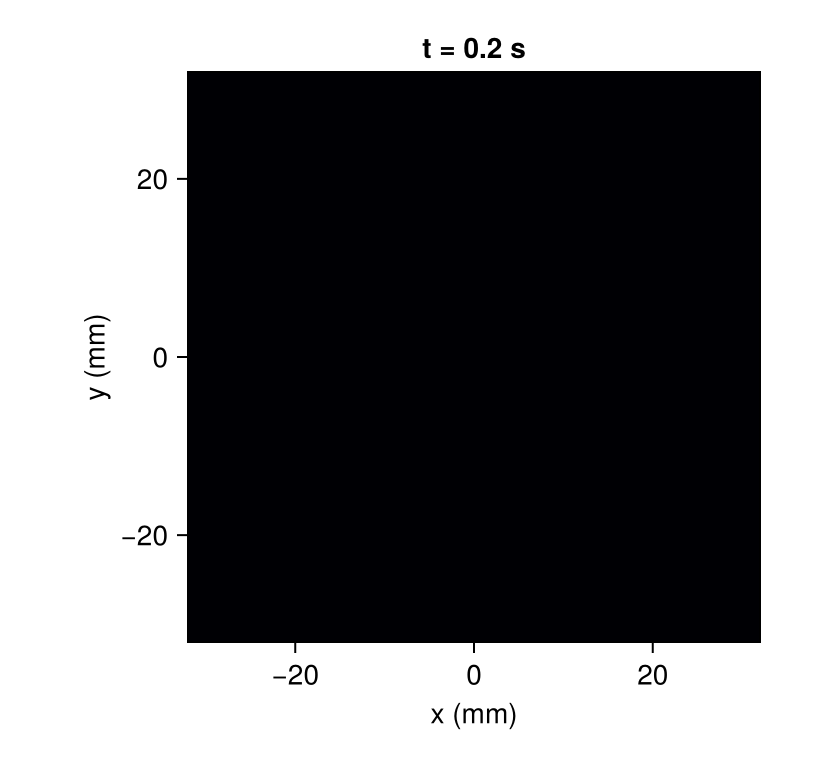
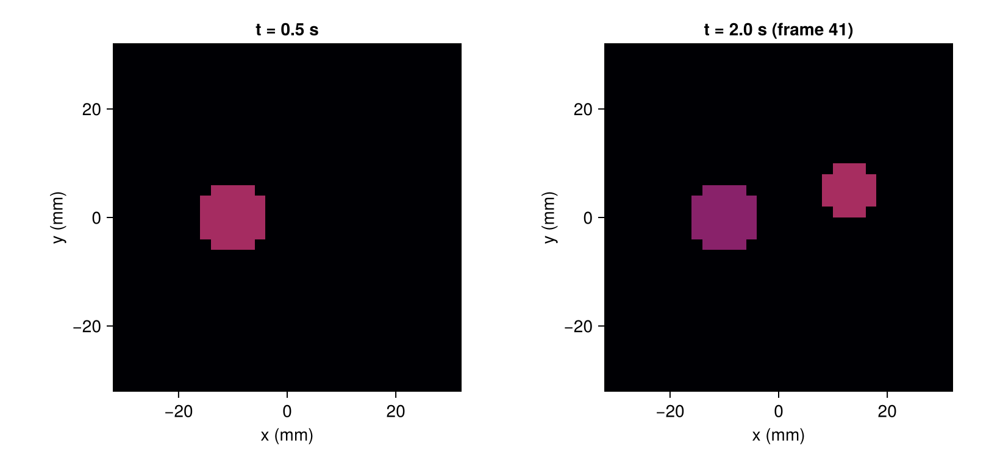
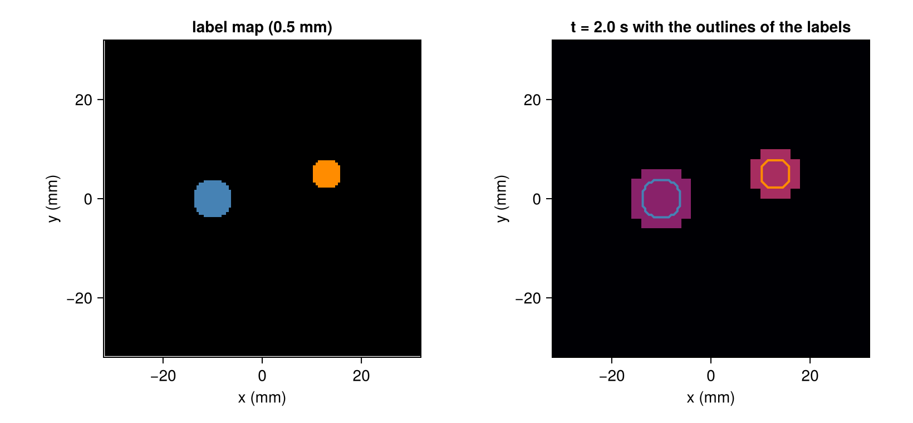
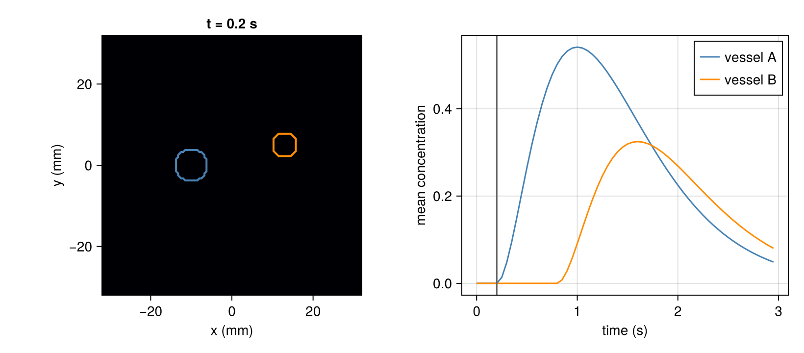

Analyze a Dynamic Image
A dynamic image shows a tracer passing through two vessels over time. This tutorial looks at its frames, brings a label map of the vessels from a finer anatomical grid onto the grid of the dynamic image, checks how the labels overlap the vessels and computes the mean concentration in each vessel over time.
The image is dynamic in its content: the values change from frame to frame, the grid does not. Every frame lies on the same geometry, as for a scanner that images a resting object. Explore a Tomographic Image introduces the basics; Grids, Spaces and Transforms explains the conventions.
using TomoImages, CairoMakieThe dynamic image
32 × 32 pixels of 2 mm and 60 frames, 0.05 s apart (0 to 2.95 s). The tracer passes vessel A (a disk of radius 6 mm) first and vessel B (radius 5 mm) later. The grid has no space keyword, so it lies in DefaultSpace. The time dimension is a NumericAxis: the time of every frame, with its unit:
g = GridGeometry((32, 32); spacing=(2.0, 2.0), origin=(-31.0, -31.0))
times = NumericAxis(0.05 .* (0:59); unit="s")
bolus(t, t0) = t > t0 ? ((t - t0) / 0.4)^2 * exp(-(t - t0) / 0.4) : 0.0
vessel_a(x, y) = hypot(x + 10, y) < 6
vessel_b(x, y) = hypot(x - 13, y - 5) < 5
function concentration(x, y, t)
vessel_a(x, y) * bolus(t, 0.2) + vessel_b(x, y) * 0.6 * bolus(t, 0.8)
end
data = [concentration(index_to_world(g, (i, j))..., t) for i in 1:32, j in 1:32, t in times]
dyn = TomoImage(data, g; dims=(x=GridAxis(1), y=GridAxis(2), time=times))
summary(dyn)"32×32×60 TomoImage{Float64} in DefaultSpace with dims x, y, time"Frames over time
The frames in turn, from 0.2 s on, when the tracer arrives, each in the coordinates of the space with its time from the time axis; the colors show the concentration from 0 to 0.6 (in arbitrary units):

Single frames are selected by time or by index. selectvalue picks the frame nearest to a time; integers select by position, either positionally (dyn[:, :, 41]) or by the name of the dimension (dyn[time=41]). Both give a 2D image on the same grid. Frame 41 is the frame at 2.0 s:
early = selectvalue(dyn; time=0.5)
late = dyn[time=41]
times[41], geometry(late) === g(2.0, true)
At 0.5 s the tracer has reached vessel A only; at 2.0 s it fills both vessels.
Labels and masks
The vessels are marked on an anatomical image of 0.5 mm pixels, in the same space, as a label map: one integer per pixel, 0 for the background, 1 for vessel A, 2 for vessel B. Each label is drawn 2 mm inside the vessel wall:
fine = GridGeometry((128, 128); spacing=(0.5, 0.5), origin=(-31.5, -31.5))
label(x, y) = hypot(x + 10, y) < 4 ? 0x01 : hypot(x - 13, y - 5) < 3 ? 0x02 : 0x00
labels = TomoImage([label(index_to_world(fine, (i, j))...) for i in 1:128, j in 1:128], fine;
dims=(x=GridAxis(1), y=GridAxis(2)));A label map marks several regions at once, and they cannot overlap. A mask holds true or false per pixel and marks one region. Comparing the label map with a label gives the mask of that region, and broadcasting keeps the geometry:
mask_a = labels .== 1
summary(mask_a), geometry(mask_a) === geometry(labels)("128×128 TomoImage{Bool} in DefaultSpace with dims x, y", true)
The labels and the dynamic image are in the same space but on different grids, so they cannot be combined pixel by pixel:
isapprox(geometry(labels), geometry(dyn))falseresample brings the label map onto the grid of the dynamic image. Labels are integers, so the default resampler is NearestResampler: every 2 mm pixel takes the label of the fine pixel at its center, and no label is averaged with its neighbors. Masks are Bool and are resampled the same way, so resampling the mask or taking the mask of the resampled labels gives the same pixels:
on_grid = resample(labels, geometry(dyn))
eltype(on_grid), parent(resample(mask_a, geometry(dyn))) == parent(on_grid .== 1)(UInt8, true)How the labels overlap the vessels: the vessels as the pixels of the dynamic grid whose centers lie inside them, and for each label the fraction of its vessel it covers and the number of its pixels outside the vessel:
inside(vessel) = [vessel(index_to_world(g, (i, j))...) for i in 1:32, j in 1:32]
overlap(mask, vessel) = (covered=count(mask .& vessel) / count(vessel), outside=count(mask .& .!vessel))
overlap(parent(on_grid) .== 1, inside(vessel_a)), overlap(parent(on_grid) .== 2, inside(vessel_b))((covered = 0.375, outside = 0), (covered = 0.42857142857142855, outside = 0))The labels cover the inner part of each vessel and no pixel outside it. In a reconstructed image the pixels at the walls mix vessel and background (the partial volume effect); the labels leave them out.
Concentration over time
For every label, the mean of the dynamic image over its pixels, frame by frame:
mean_in(img, mask) = [sum(parent(img[time=k])[mask]) / count(mask) for k in 1:size(img, 3)]
curve_a = mean_in(dyn, parent(on_grid) .== 1)
curve_b = mean_in(dyn, parent(on_grid) .== 2);The labels lie inside the vessels, so their pixels hold exactly the simulated concentrations, and the curves reproduce them up to the rounding of the mean:
maximum(abs, curve_a .- bolus.(times, 0.2)), maximum(abs, curve_b .- 0.6 .* bolus.(times, 0.8))(1.6653345369377348e-16, 5.551115123125783e-17)The time axis of the image gives the times of the frames, so the curves are plotted against seconds without separate bookkeeping:
seconds = collect(TomoImages.dims(dyn).time)
first(seconds), last(seconds), TomoImages.unit(TomoImages.dims(dyn).time)(0.0, 2.95, "s")The curves, together with the frames and the outlines of the labels:

This page was generated using Literate.jl.